China Leading Indicators: Official vs Caixin PMI and Real Rates
Reading China's real growth through non-government data, and expressing it via US-listed ADRs.
Because Chinese GDP stats are manipulated and the indices decouple from growth, use the Caixin PMI, its divergence from the official PMI, and China real rates to read China and trade it through US-listed ADRs.
The gist
- Chinese GDP is heavily manipulated and the indices barely correlate with GDP, so the usual 'forecast GDP -> forecast index' playbook fails in China.
- Focus on the Caixin manufacturing PMI (compiled by IHS Markit, ~500 firms reporting to a private entity outside China) as the more realistic read on expansion/contraction.
- The Caixin-minus-Official difference is a lie detector: official reported ABOVE 50 while Caixin is BELOW 50 marks a 'definite lie'.
- China real 10Y rate = 10Y yield minus CPI YoY; it tracks the US real rate historically but recently sits far higher (possibly understated CPI).
- Do not trade Chinese indices or bonds directly; express any China view through US-listed Chinese ADRs/ETFs and China-demand sectors, and watch for short/put setups on manipulation and accounting fraud.
The subject: China's leading indicators
- Video 14, Leading Indicators 10: Official and Caixin China Manufacturing PMIs.
- Two downloadable datasets: China_Manufacturing_PMIs and China_Real_Rates.
The lesson adds China as a leading-indicator geography, after the US and Europe, to complete a global macro view covering roughly 50% of world GDP.
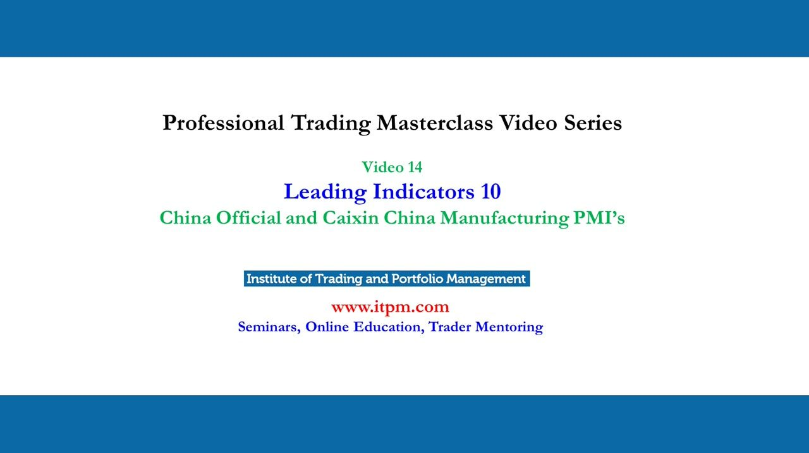
China's size and why GDP can't predict its indices
- China's 2019 nominal GDP was ~$14,731.81bn, ranked #2 (18.2% of world), behind the US (~$21,433.23bn, 24.8%).
- Official growth slowed from 10.5% (2010) to 8.1% (2021); last-5-year range 2.3% (2020) to 8.1% (2021); pre-Covid 'normal' ~6-7%.
- Chinese GDP stats are a 'well known secret fact' of heavy manipulation, so GDP cannot be used to forecast the Shanghai Composite, Shenzhen Component or Hang Seng.
- Quadnomial (0,0 / 1,1 / 0,1 / 1,0) over 113 case quarters: same-direction 55.75% (63) vs opposite 44.25% (50); the 0-1 case (index down while GDP up) is 40.71% (46), nearly as common as the 1-1 up-up case at 46.02% (52).
The index moves with GDP only about as often as a coin flip, so the standard GDP-to-index forecasting method is broken in China.
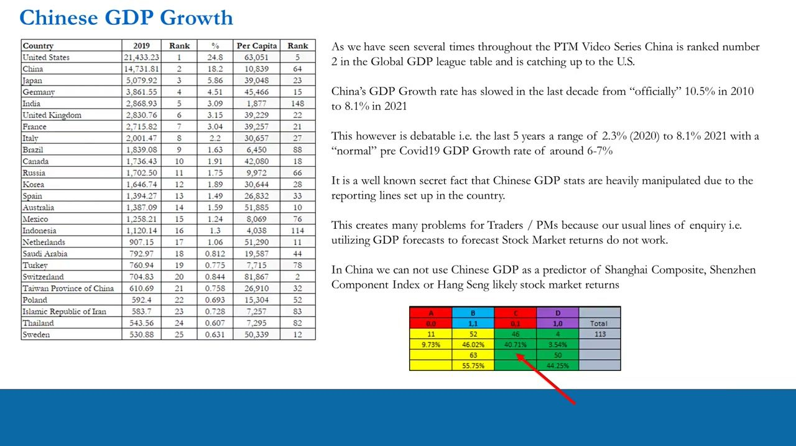
Why the correlation breaks (reasons 1-2): manipulation and export dependence
- GDP manipulation: 431 provinces and 3,418 prefectures report GDP up the chain; local officials manipulate or push last-minute infrastructure for their own promotions, and that volume never reaches listed-company earnings.
- Export dependence + CCP illusion of control: ~19% of the economy is exports (19% to the US, 19% to the EU, 50% to other Asia); when the US/EU slow or impose tariffs, the CCP manipulates the figures to maintain an illusion of control and stay in power.
Why the correlation breaks (reasons 3-4): no middle class, no population growth
- No pensions infrastructure / tiny middle class: no IRA/401k equivalent, so no guaranteed monthly buyer putting a floor under the market; wealth is polarised between big-city elites and rural/urban poor.
- The '700m lifted out of poverty' stat used a $3/day line 10 years ago; over 700m still live on under $4/day, many more under $10/day.
- No population growth: the (now-ended) single-child policy leaves limited labour-force and consumer capacity, a structural consumer headwind.
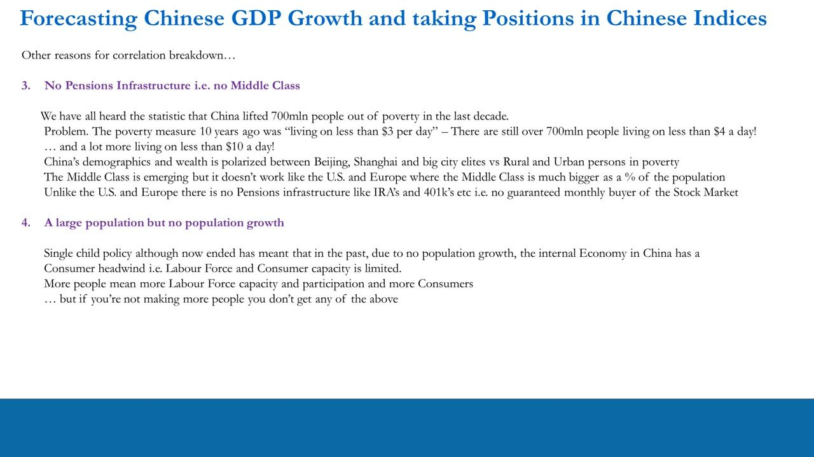
Why the correlation breaks (reason 5): a closed, fragmented market
- Shanghai Composite (SSE) = China A shares (domestic, RMB); Shenzhen Component (SZSE) = China B shares (foreign institutional, USD).
- Foreign A-share access is limited to Qualified Foreign Institutional Investors (QFII); domestic buyers can't buy B shares, so foreign flows don't rise with GDP.
- The only true retail route to Chinese stocks is US-listed single-stock ADRs and ETFs, or single stocks in the Hang Seng China Enterprise Index (HSCEI) in Hong Kong; US-listed ADRs/ETFs are by far the better option.
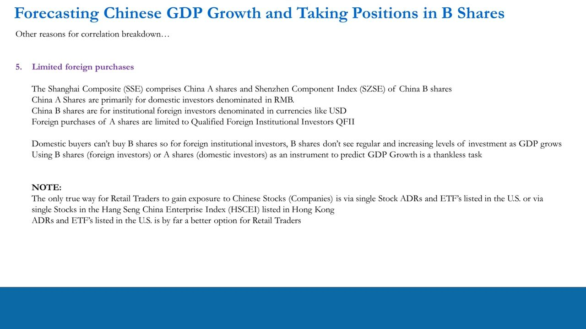
Caixin PMI survey design
- Compiled by IHS Markit from a panel of ~500 private and state-owned manufacturers; crucially they report to a private entity outside China, not to the government.
- Diffusion index: responses collected in the second half of each month, indicating direction of change vs the prior month; index = % 'higher' plus half the % 'unchanged'.
- Range 0-100; above 50 = expansion, below 50 = contraction; seasonally adjusted.
- Headline PMI = weighted average of five sub-indices: New Orders 30%, Output 25%, Employment 20%, Suppliers' Delivery Times 15%, Stocks of Purchases 10%.
Even state-owned respondents report to IHS Markit rather than Beijing, which is why Anton treats Caixin as far more reliable on the reality in China than the official government data (though still not perfectly clean).
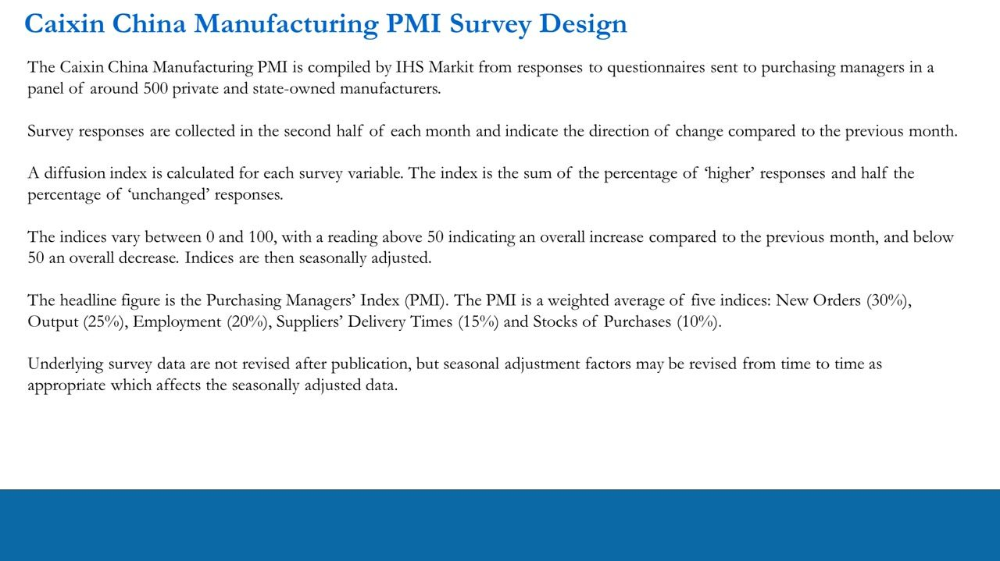
The Official (NBS) PMI, month-on-month
- Bar chart of the MoM change in the Official (NBS) China Manufacturing PMI, 2005-2021 (green = up, red = down).
- MoM changes were far more volatile in 2005-2012 and settle to small moves from ~2013 onward.
- Extremes: ~-6.5 into the 2008 GFC; a Covid spike of roughly -14.5 in early 2020 immediately followed by a ~+16 rebound.
- History: pre-GFC readings ran high-50s / above 55; the post-GFC decade rarely printed above 55, with a defined ~52 'reporting-expansion ceiling' in 2016-2018 (clustered at 50/51/52); troughs tend to sit ~35-40.
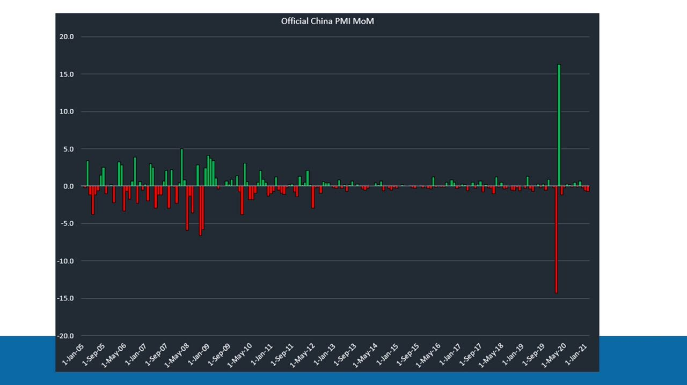
The Caixin PMI level and its link to real GDP
- Caixin PMI oscillates around 50, mostly ~47-55, with crisis lows ~41 (2008/09) and ~40 (early 2020).
- During 2011-2017 Caixin printed many sub-50 (contraction) readings while the official number stayed above 50.
- Overlaid against China real (CPI-adjusted) GDP growth YoY, Caixin has a strong visual relationship with and leads GDP (which is reported later).
- GDP growth trends structurally down from mid-teens (~15%) in 2007 toward ~5-6% by 2019, with a Covid trough near -9% to -10% then a V-shaped recovery.
- Caixin leads GDP, but it does NOT usefully lead the Chinese stock indices.
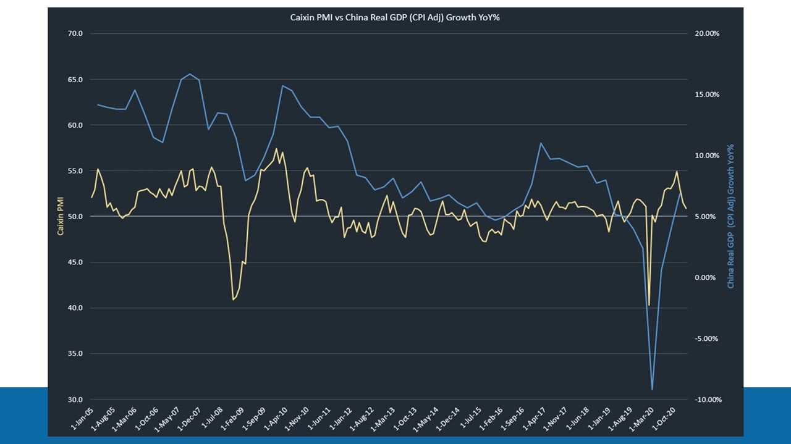
The lie detector: Official-minus-Caixin divergence
- Difference series = Caixin minus Official; if the official is reported higher than Caixin the difference is negative, and across history the differences are in the majority negative (official reported higher).
- Every month the official prints above Caixin, treat the official data as suspect ('potential lies') and don't lean on it to forecast GDP.
- 'Definite lies' filter = Official above 50 (expansion) while Caixin is below 50 (contraction): the government claiming manufacturing isn't contracting when the independent survey says it is.
- Clusters: one in 2005; several out of the GFC; a big cluster across 2011-2017 (esp. 2011-end 2012); March 2020 a potential lie, April 2020 a definite lie; 2020-onward looks more truthful.
- Motive: the CCP wants to project an illusion of control, especially when exports to the US/EU weaken or under tariffs.
Comparing the government number to the independent Caixin number both gives a more realistic growth read and gauges how much the government is potentially lying.
China money-market indicator: real interest rates
- China is the world's 2nd-largest government bond market (~$16trln issuance), but ~98.5% is onshore, RMB-denominated, with no access allowed to international investors.
- With little-to-no private market, the bond yield's price discovery is 'fairly meaningless' as a proxy or leading indicator.
- Instead compute China Real 10Y Rate = China 10Y benchmark yield minus China CPI YoY; interest-rate and CPI data are available back to 2000.
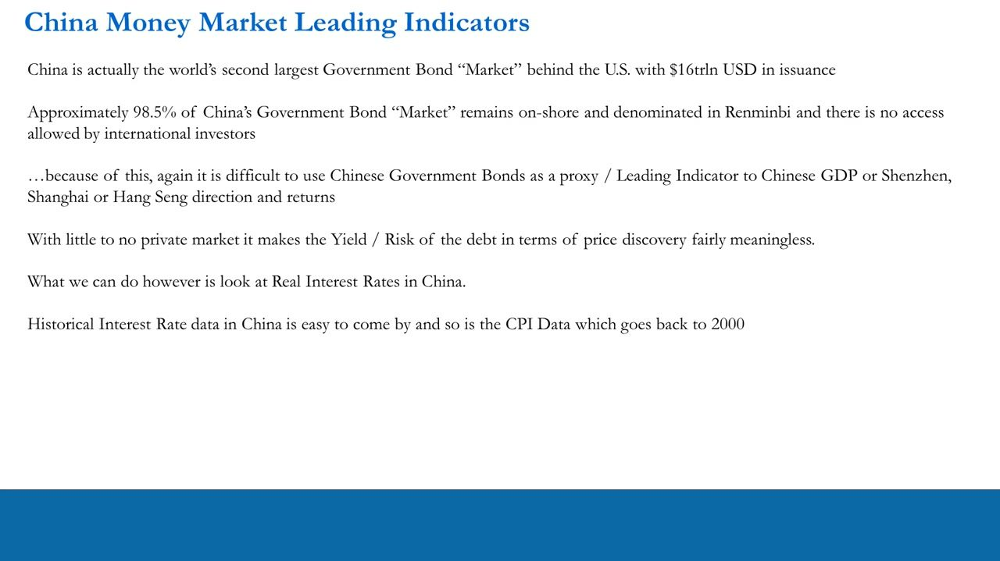
China vs US real 10Y rates
- Chart of China Real 10Y (blue) vs US Real 10Y (orange), where real rate = 10Y yield minus CPI YoY.
- The two track fairly tightly over 2000-2020; both spiked near +5.5% around mid-2009 and swung to deep negatives (China ~-4.5% around 2008).
- Recent history shows a big discrepancy: deeply negative US real rates vs comparatively very high China real rates.
- Anton's tongue-in-cheek read: a high real rate can be an artifact of understated CPI ('maybe they may be lying about their inflation data').
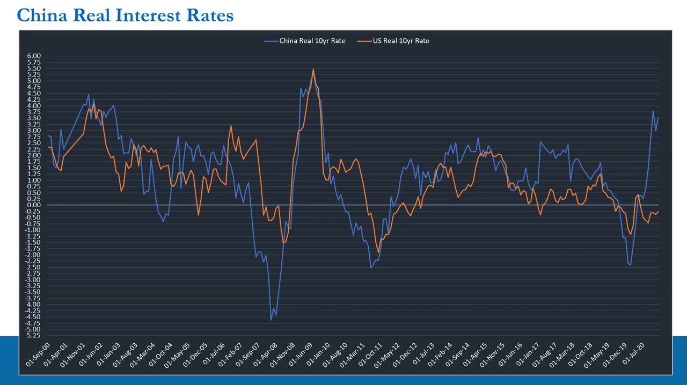
Real rates = the price of money (reminder and China caveat)
- Cheaper money = more borrowing + more liquidity = inflationary + expansionary GDP, and LESS equity-market volatility.
- More expensive money = less borrowing + less liquidity = deflationary + contractionary GDP, and MORE equity-market volatility.
- But we cannot use Chinese real rates to predictably forecast Chinese equity direction, volatility, or central-bank policy.
- The five reasons above plus the CCP being political (it controls the money supply and debt market, with no Fed-style dual mandate) mean predicting China on Western ideals is naive.
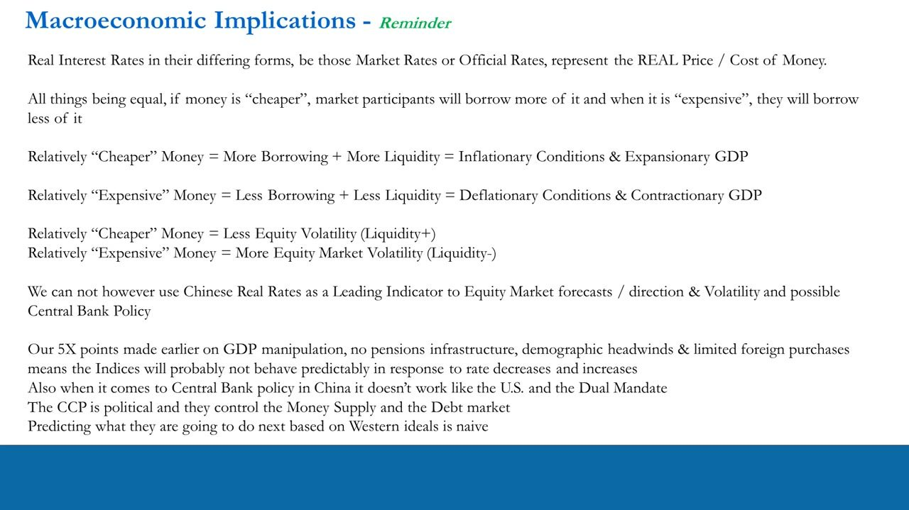
How to use it: the China trade route
- Get a more accurate read on China's expansion/contraction to complete the US + Europe + China (~50% of global GDP) macro view.
- Forecast revenue and earnings at US companies with large China exposure.
- Generate ideas in US-listed Chinese ADRs (NYSE/NASDAQ) with high China revenue exposure, and in China-demand sectors: mining, metals, autos, chemicals, construction, energy (including European ADRs).
- A slowdown in US/EU PMIs flags a coming China slowdown, since China depends heavily on US/EU exports.
- Short / put-structure setups: when the manipulation is spotted and ADRs rally on fake stats, reality won't show in US-standard reported earnings; plus company-specific accounting fraud.
- Execution caution: ensure any Chinese ADR is listed and tradable (not OTC).
China stays a backdrop input to the global macro view; any China view is expressed only through US-tradeable instruments, never a foreign-index short.
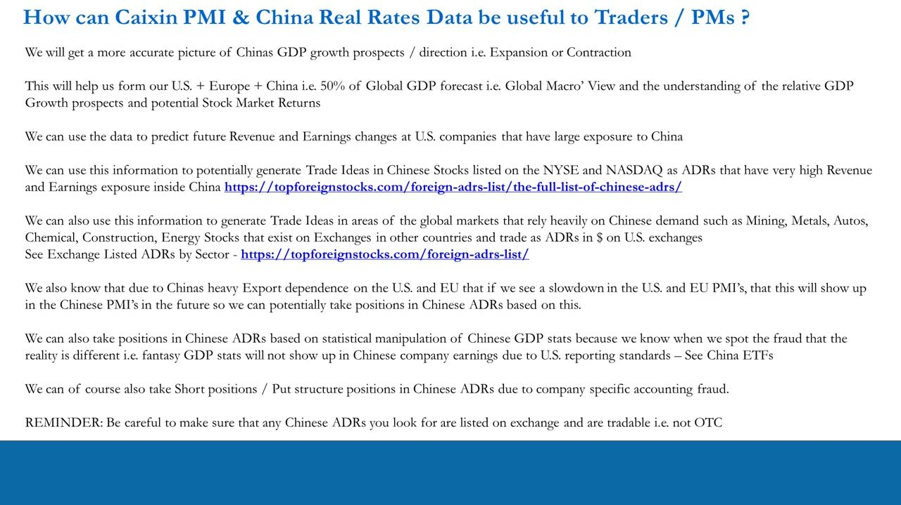
Glossary
- Caixin China Manufacturing PMIIndependent manufacturing PMI compiled by IHS Markit from ~500 private and state-owned firms reporting to a private entity outside China; treated as the more realistic read on Chinese growth.
- Official (NBS) PMIThe Chinese government's National Bureau of Statistics manufacturing PMI, which can be manipulated and is checked against Caixin.
- Diffusion indexIndex = % of 'higher' responses plus half the % of 'unchanged'; range 0-100, with 50 the expansion/contraction line.
- Definite lie filterMonths where the official PMI printed above 50 (expansion) while Caixin printed below 50 (contraction) - the strongest evidence of manipulation.
- China Real 10Y RateChina 10-year benchmark yield minus China CPI YoY; the inflation-adjusted cost of money, charted against the US real 10Y.
- A shares / B sharesA shares = Shanghai (SSE), domestic-only, RMB; B shares = Shenzhen (SZSE), foreign institutional, USD; foreign A-share access is limited to QFII.
- QFIIQualified Foreign Institutional Investor - the restricted channel through which foreign institutions may buy China A shares.
- ADRAmerican Depositary Receipt - a US-listed instrument (NYSE/NASDAQ) giving retail traders exposure to a foreign company; the preferred route to trade a China view.
- HSCEIHang Seng China Enterprise Index - single Chinese stocks listed in Hong Kong.